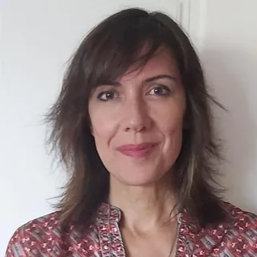
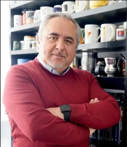

Asunción Bernárdez Rodal
Universidad Complutense de Madrid, Spagna

Milly Buonanno
Sapienza Università di Roma, ItaliaMC
Maddalena Cannito
Università di Torino, Italia
FC
Francesca Comunello
Università La Sapienza di Roma, Italia
Lisa Cuklanz
Boston College, Stati Uniti

Susana de Andrés del Campo
Universidad de Valladolid, SpagnaGE
Giorgia Esposito
Università di Torino, Italia
MF
Manolo Farci
Università di Urbino, Italia
CG
Chiara Gius
Università di Bologna, Italia

Luis Alfonso Guadarrama Rico
Universidad Autónoma del Estado de México, Messico
Susana Guerrero Salazar
Universidad de Málaga, Spagna
Flavia Laviosa
Wellesley College, Stati Uniti
EL
Emanuela Lombardo
Normale di Pisa, Italia
MN
Manuela Naldini
Università di Torino, Italia
CO
Cynthia Ottaviano
Universidad Nacional de La Plata, Argentina
AO
Asuka Ozumi
Università di Torino, Italia
CP
Claudia Padovani
Università di Padova, Italia
VP
Viviana Patti
Università di Torino, Italia

Gabriella Polizzi
Università Kore di Enna, ItaliaDR
Débora Ricci
Universidade de Lisboa, Portogallo

Pilar Rodríguez Pérez
Universidad de Deusto, SpagnaFS
Flaminia Saccà
Università La Sapienza di Roma, Italia

Marco Scarcelli
Università di Padova, ItaliaMT
Maria Terezinha Silva
Universidade Federal de Santa Catarina, Brasile
ST
Simona Tirocchi
Università di Torino, Italia

Magdalena Trillo
Universidad de Granada, Spagna